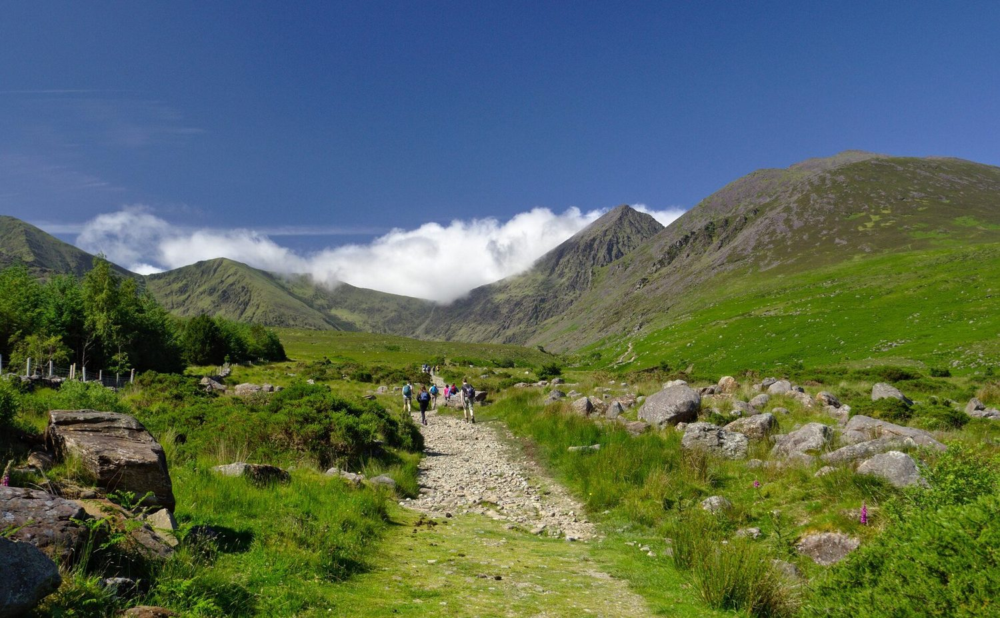
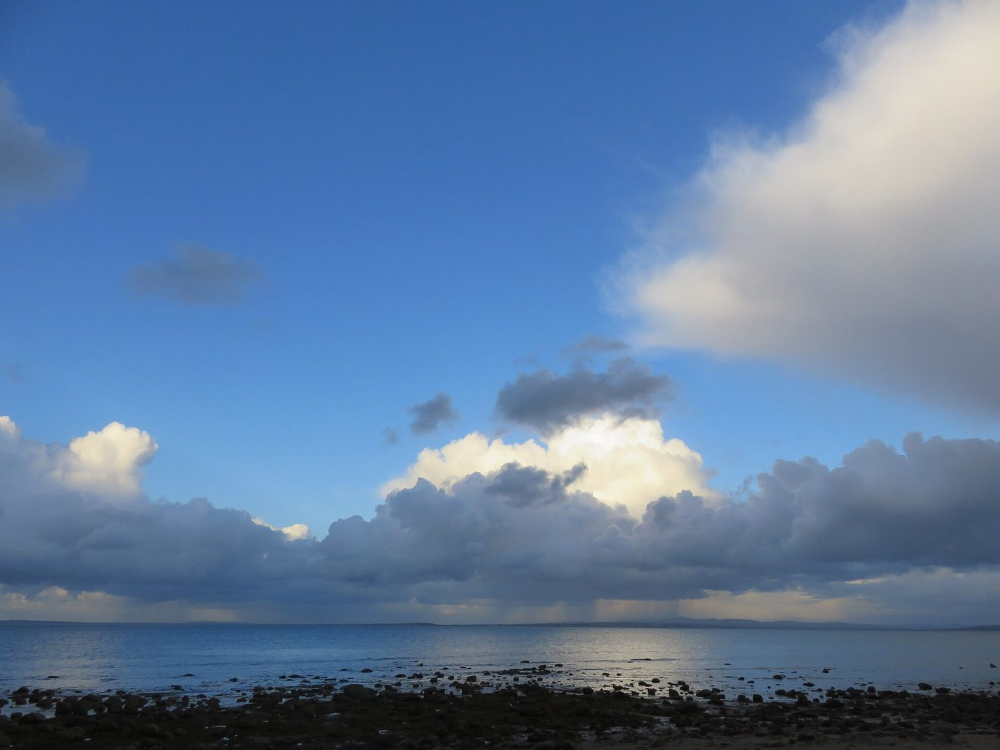
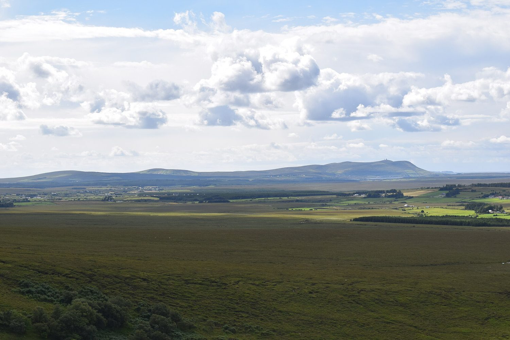
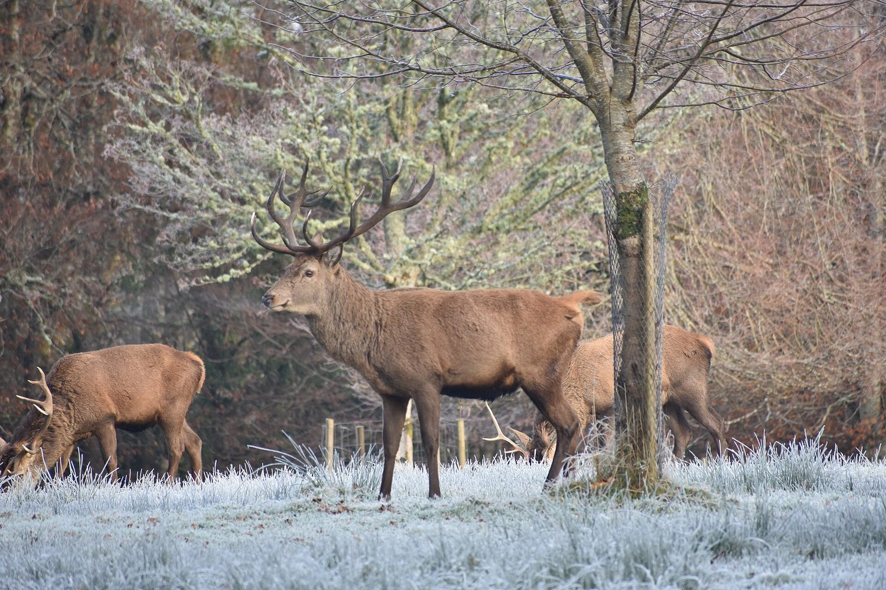

The land itself
Geography, climate and wildlife
Ireland sits at the north-western edge of Europe: 84,421 square kilometres of limestone, bog and rain, with the Atlantic on three sides. What the island is shaped like, what the weather does to it, and what lives on it are all part of the same story.

A small island with a very long edge.
on the Irish coast
The shape of the island
Ireland is the twentieth-largest island in the world and, by European standards, a small one: 84,421 square kilometres, roughly the size of Austria. The Republic covers about 70,000 of those, Northern Ireland the rest. No point on the island is more than about a hundred kilometres from the sea.
The land is mostly low and central — a limestone plain that drains badly, which is why so much of the middle of the country is wet. The mountains sit around the edges instead: the MacGillycuddy's Reeks in Kerry hold Carrauntoohil, at 1,038 metres the highest point on the island, while the Wicklow Mountains rise just south of Dublin. The Shannon, at about 360 kilometres the longest river in either Ireland or Britain, runs south from County Cavan to the Atlantic at Limerick.
Four provinces — Connacht, Leinster, Munster and Ulster — hold thirty-two counties between them. The coastline runs for roughly three thousand kilometres, a great deal of edge for an island this size, and it is the reason the west still feels like a different country from the east.
The weather
Ireland has a temperate oceanic climate: mild, wet and changeable, with very few extremes in either direction. The North Atlantic Drift keeps winter frosts short and summer heat rare. Snow lies on low ground only a handful of days a year, and a temperature above 25°C is a national event.
Rain is the defining fact. The west coast takes 1,000 to 1,400 millimetres a year, the east around 700. It rarely falls in long storms — it arrives in short showers and passes — but it arrives on well over half the days of the year, which is what makes the country green and what makes an umbrella close to pointless.
The weather also changes faster than a forecast can follow it, because there is nothing between Ireland and Newfoundland but ocean. A morning of low cloud can turn into a clear afternoon and back again. The Irish answer to this is the phrase 'a soft day', which describes rain so light it barely qualifies as rain at all.

What grows here
Six thousand years ago most of Ireland was forest — oak, ash, pine and elm. Neolithic farmers cleared it with stone axes, and later centuries finished the job for timber, tanning and farmland. Woodland now covers about 11 per cent of the country, the lowest figure in Europe and less than a third of the European average. Only a small part of that is native.
What replaced the forest is bog. Ireland holds around 8 per cent of the world's blanket bog, and peatland covers roughly a sixth of the country. Sphagnum moss grows faster than it decays, laying down peat at about a millimetre a year; some bogs are several metres deep and thousands of years old, and they preserve whatever falls into them — butter, weapons, and occasionally people.
The rest of the landscape is defined by what survives on poor ground: gorse, or whin, which burns yellow twice a year and smells faintly of coconut; purple heather; the fuchsia hedges of the south-west, planted as field boundaries; and bog cotton, whose white heads mark the wet places from a distance. The Burren in County Clare does the opposite, with arctic-alpine flowers growing out of bare limestone pavement.

What lives here
Ireland has around twenty-six native land mammals, which is few for its size, and the reason is the sea. The island was cut off from Britain soon after the last ice age, before most of Europe's larger animals had crossed, so there are no moles, no weasels, no wildcats and — despite the legend of St Patrick — never any snakes.
The red deer of Killarney are the oldest surviving herd in Ireland and among the oldest in Europe, descended from animals that arrived before the land bridge closed. The Irish hare is a distinct subspecies found nowhere else, the pine marten has recovered in the west from near-extinction, and the natterjack toad survives in a handful of ponds in Kerry and Wexford.
The real abundance is on the coast. Ireland's cliffs and islands hold some of Europe's largest seabird colonies: gannets on the Skelligs, puffins on the Saltees and the Antrim coast, and tens of thousands of Manx shearwaters on the islands off Kerry. Offshore, grey and harbour seals are common enough that a boat trip without one is considered unlucky.

Three things make the island what it is: its shape, its weather, and the life that settled into both.